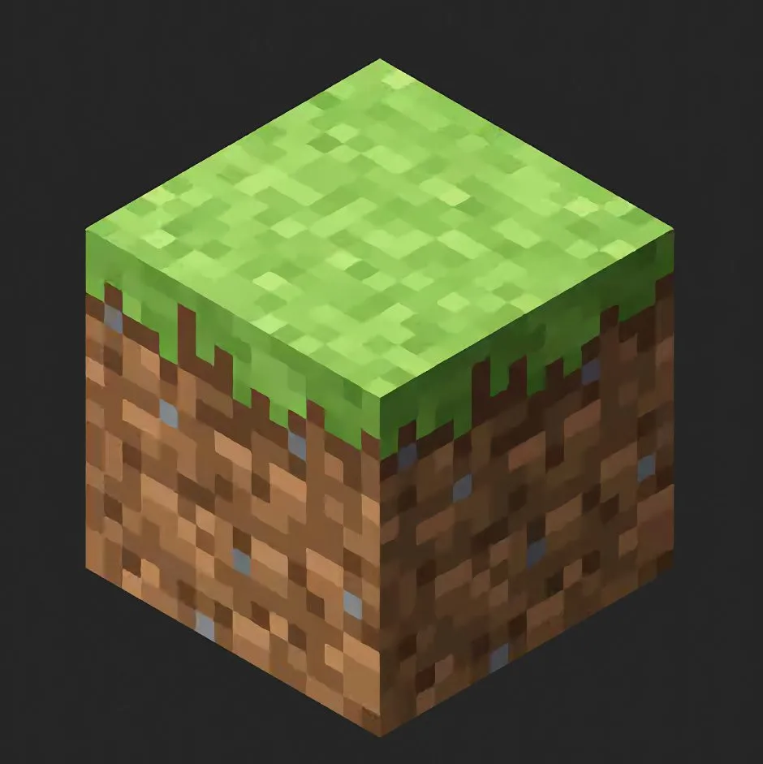
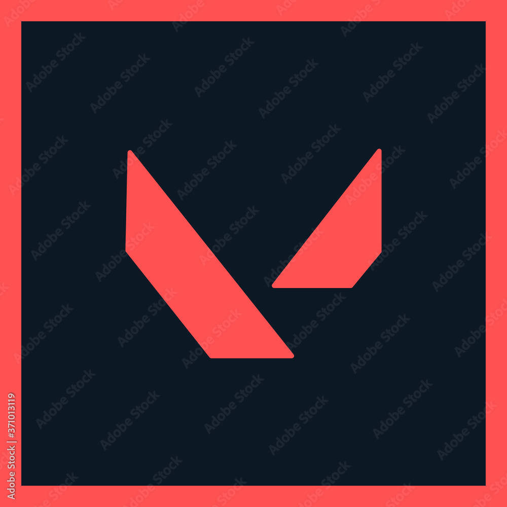
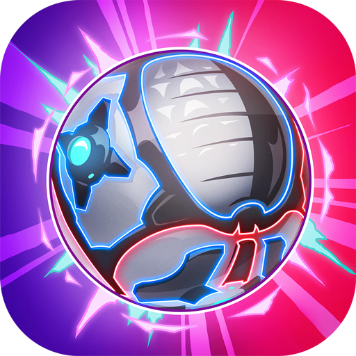
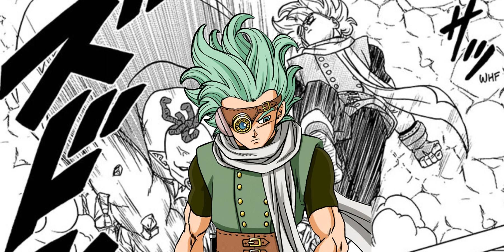
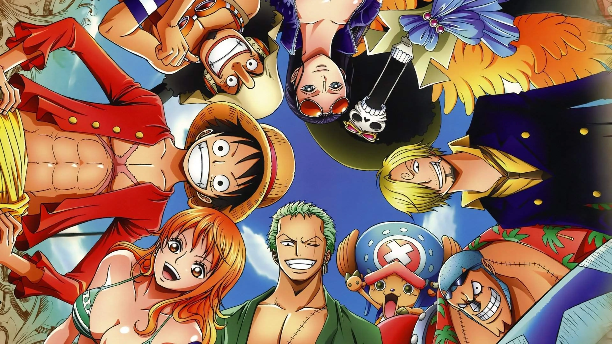
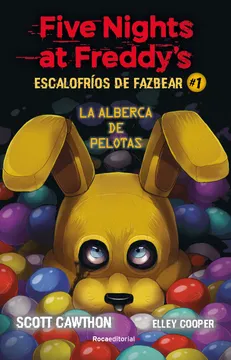
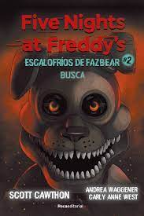

Mi Bibliografía

Yo
Mi nombre es Jossué David Cáceres Saraza, estudio en el colegio Cramer. En inicial, primaria y un poco de secundaria estudié en el colegio Glorioso San Carlos. Tengo 15 años y curso el grado de 4to de secundaria A.
En este colegio tuve bastantes experiencias entre las cuales están:
-Formar parte del conjunto de sikuris, gracias a que también estuve en el conjunto de sikuris de mi anterior colegio tuve un gusto por la zampoña y decidí unirme a este conjunto.
-Participar en muchos concursos y olimpiadas, gracias a la enseñanza exigente y de mayor nivel pude sacar buenos resultados en algunos de estos.
-Pude participar en el desfile de eventos específicos, gracias a mi experiencia en mi anterior colegio pude tener la oportunidad de ser elegido y llevar la insignia de la institución.
-Gracias al curso de arte y a mi docente de Arte tuve un gusto hacia la música e instrumentos musicales, uno de estos es la guitarra que me esforcé por aprender a tocar y estar en el taller de música.
-Pude estar en el team de programación, la programación me pareció muy interesante y divertido, gracias a las enseñanzas de mi docente Marcos pude participar en concursos como la OPI, pero lamentablemente por el tiempo que no disponía tuve que retirarme ya que los días que no entraba a clases me atrasaba.
Mis Gustos
Me gustan los animes Dragon Ball y One Piece!
 
Me gustan los juegos como Minecraft, Tetris, Roblox, RL Sideswipe, Lol, Valorant, FNAF y Osu! Manía
 